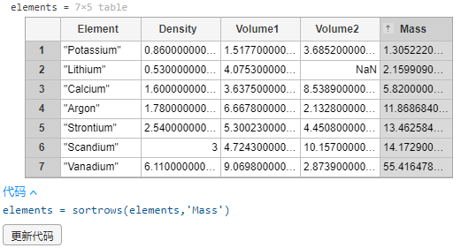

输入：
load datafile
colum
data
结果：
column =
0.5300
1.7800
0.8600
1.6000
3.0000
6.1100
2.5400
data =
3.0000 0.5300 4.0753 NaN
18.0000 1.7800 6.6678 2.1328
19.0000 0.8600 1.5177 3.6852
20.0000 1.6000 3.6375 8.5389
21.0000 3.0000 4.7243 10.1570
23.0000 6.1100 9.0698 2.8739
38.0000 2.5400 5.3002 4.4508一、普通索引
1.1 向量索引
不管是行向量还是列向量，都只需要一个索引值。
1.1.1 提取单个元素
输入：
x = column(6)
结果：
x =
6.1100可以使用 MATLAB 关键字 end 作为行或列索引来引用最后一个元素。
输入：
x = column(end)
结果：
x =
2.5400提取数组中的元素后，就可以修改它的值：
输入：
x = data(1,:)
x(end) = 0.5
结果：
x =
3.0000 0.5300 4.0753 NaN
x =
3.0000 0.5300 4.0753 0.51.1.2 提取多个元素
单个索引值范围可用于引用向量元素的子集。
输入：
x = column(2:5)
结果：
x =
1.7800
0.8600
1.6000
3.0000索引可以是非连续数字。
输入：
m = [1 3 6]
x = column(m)
结果：
x =
0.5300
0.8600
6.11001.2 矩阵索引
1.2.1 提取单个元素
矩阵需要2个索引值，您可以使用行、列索引从数组中提取值。
输入：
y = data(6,3)
结果：
y =
9.0698可以将算术运算与关键字 end 结合使用：
输入：
y = data(end-1,end-1)
结果：
y =
9.0698如果对一个矩阵索引时只使用一个参数，它将按顺序从上到下遍历每列。
输入：
y = data(8)
输出：
y =
0.53001.2.2 提取多个元素
用作索引时，冒号运算符（:）可指代该维度中的所有元素。创建一个包含 data 中第 2 列上所有元素的列向量：
输入：
y = data(:,2)
结果：
y =
0.5300
1.7800
0.8600
1.6000
3.0000
6.1100
2.5400冒号运算符（:）也可以引用某个值范围。创建一个包含 data 的最后两列所有元素的矩阵：
输入：
y = data(:,end-1:end)
结果：
y =
4.0753 NaN
6.6678 2.1328
1.5177 3.6852
3.6375 8.5389
4.7243 10.1570
9.0698 2.8739
5.3002 4.4508二、逻辑索引
输入：
sample = data(:,1);
v = data(:,3);
结果：
sample =
3.0000
18.0000
19.0000
20.0000
21.0000
23.0000
38.0000
v =
4.0753
6.6678
1.5177
3.6375
4.7243
9.0698
5.3002关系运算符（例如 >、<、== 和 ~=）执行两个值之间的比较。相等或不相等比较的结果为 1 (true) 或 0 (false)。
输入：
test = (pi<4)
结果：
test =（logical）
12.1 生成逻辑数组
将某个向量或矩阵与单个标量值进行比较，结果是与原始数组相同大小的逻辑数组。
比如，测试向量 v 中是否有小于 4 的元素。
输入：
test = (v < 4)
结果：
test =（7×1 logical array）
0
0
1
1
0
0
02.2 使用逻辑数组提取元素
可以使用逻辑数组作为数组索引，MATLAB 会提取索引为 true 的数组元素。比如，提取 v 中所有小于 4 的元素。
输入：
y = v(v < 4)
结果：
y =
1.5177
3.6375可以使用逻辑运算符“与（&）”以及“或（|）”来组合逻辑提取。比如，获取 v 中介于 5 和 10 之间的值。
输入：
y = v(v>5 & v<10)
结果：
y =
6.6678
9.0698
5.3002也可以对两个不同向量使用逻辑索引。比如，提取 sample 中与 v 中小于 4 的元素所在位置对应的元素。
输入：
y = sample(v < 4)
结果：
y =
19
202.3 使用逻辑数组修改元素
利用逻辑索引，可以在数组中对满足条件的元素重新赋值。比如，将 v 中所有小于 4 的元素都替换为 0。
输入：
v(v < 4) = 0
结果：
v =
4.0753
6.6678
0
0
4.7243
9.0698
5.3002三、表索引
有时候我们要处理的数据，是表格数据。如下图所示：
3.1 提取行
要提取表变量的行，使用常规数组索引即可。比如，提取表的前3行：
输入：
top3 = elements(1:3,:)
结果：
top3 =（3×4 table）
Element Density Volume1 Volume2
___________ _______ _______ _______
"Lithium" 0.53 4.0753 NaN
"Argon" 1.78 6.6678 2.1328
"Potassium" 0.86 1.5177 3.6852 请注意：top3 也是一个表。如下图所示：
3.2 提取列
要提取表变量的列，可以使用圆点表示法。比如，将 elements 表中 Density 一列的内容赋给名为 d 的列向量：
输入：
d = elements.Density
结果：
d =
0.5300
1.7800
0.8600
1.6000
3.0000
6.1100
2.5400
3.3 产生新列
如果您正在使用表，您可能希望将相关数据放在一起。您可以将计算结果赋给表，而不是创建单独的变量。
比如，将 elements.Density 的每个元素与 elements.Volume1 相乘（请使用 .*），将结果赋给 elements.Mass。
变量 elements.Mass 不存在，MATLAB 将在表中创建名为 Mass 的新变量。
输入：
elements.Mass = elements.Density .* elements.Volume1
结果：
表新增了名为 Mass 的一列，值为 elements.Density 的每个元素与 elements.Volume1 的乘积3.4 排序
通过在实时脚本的输出窗格，点击表可以与表进行交互。
例如，按质量，从小到大对表进行排序：

如果觉得对表的处理结果满意的话，可以通过工作区提示的代码来更新代码使更改永久化。
输入：
elements = sortrows(elements,'Mass')